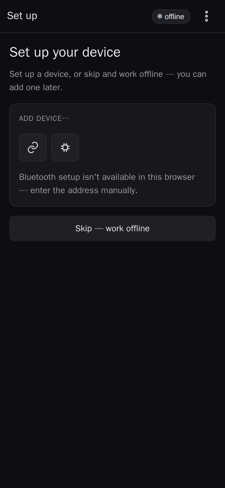

Welcome to Splanc
Map, control, and animate addressable LED fixtures from your phone.
Splanc turns a phone into the control surface for addressable LED art. You point the camera at a running fixture, the app watches the LEDs blink out their addresses, and it reconstructs where every LED sits in 3D space. That map then drives real-time effects on the fixture — authored on the phone and played back by the on-device firmware.
Everything lives on the device in front of you: maps and effects are stored locally in the browser, and the app works fully offline once loaded. It is an installable PWA, so you can add it to your home screen and launch it like a native app.
The three tabs
The bottom bar is the whole app in miniature:
- Maps — your library of captured fixtures and the 3D mapping workspace.
- Effects — the effect library and the in-app shader editor.
- Device — connect to, name, flash, and tune the physical controllers.